딥스카이 탐험
딥스카이란?
딥스카이(Deep Sky)는 우리 태양계 너머, 망원경으로 관측할 수 있는 성운, 성단, 은하처럼 지구에서 멀리 떨어진 천체들을 일컫는 말입니다. 이들은 지구에서 매우 멀리 떨어져 있고, 자체 발광량이 약하거나 빛이 희미해 맨눈으로는 쉽게 관측하기 어렵습니다. 그래서 ‘깊은 우주’ 또는 ‘심원 천체’라고도 불립니다. 딥스카이 천체는 육안이나 쌍안경으로는 보기 힘들지만, 우주의 신비와 아름다움을 간직하고 있어 많은 이들이 관측과 촬영을 즐깁니다. 성운이나 은하의 구조와 색감을 포착하려면 장시간 노출 촬영이 필요하며, 대표적인 딥스카이 대상으로는 오리온 성운, 안드로메다 은하, 플레이아데스 성단 등이 있습니다. 이들은 각기 다른 형태와 빛깔로 밤하늘을 장식합니다.
오리온 성운 (m42)
오리온 성운 (Orion Nebula)
겉보기 등급: 약 4.0등급
물리적 성질: 산광성운(방출 성운), 별 형성 지역, 약 1,344 광년 거리, 약 24 광년 크기
적경: 05h 35m
적위: -05° 27'
개요
밤하늘에서 가장 밝고 유명한 성운 중 하나로, 맨눈으로도 희미하게 볼 수 있는 몇 안 되는 성운입니다. 거대한 별 형성 지역으로, 수많은 새로운 별들이 탄생하고 있는 우주의 요람입니다.
어떻게 찾을까?
오리온자리의 허리띠(삼태성) 아래에 있는 '칼자루' 부분에서 쉽게 찾을 수 있습니다. 어두운 밤하늘에서는 맨눈으로도 작은 구름처럼 보이며, 쌍안경이나 소형 망원경으로도 놀라운 모습을 보여줍니다.
관측 난이도
맨눈으로도 희미하게 보이며, 쌍안경이나 소형 망원경으로도 놀라운 모습을 보여줍니다. 아마추어 천문학자들에게 필수 관측 대상이며, 초보자도 쉽게 찾고 감상할 수 있습니다. 대구경 망원경에서는 성운 내부의 복잡한 구조와 '트라페지움 성단'을 선명하게 볼 수 있습니다.
특징
성운의 중심에는 '트라페지움 성단(Trapezium Cluster)'이라고 불리는 젊고 뜨거운 별 네 개가 있는데, 이 별들이 내뿜는 강력한 자외선이 주변의 가스를 이온화시켜 성운이 빛나게 합니다. 성운 내에는 가스와 먼지가 압축되어 새로운 별들이 계속해서 태어나고 있으며, 이는 별의 탄생 과정을 연구하는 데 중요한 역할을 합니다.
장미 성운 (NGC 2237)
장미 성운 (Rosette Nebula)
겉보기 등급: 성운 자체는 약 6.0등급 (중심 성단 NGC 2244는 약 4.8등급)
물리적 성질: 발광 성운, 별 형성 지역, 약 5,200 광년 거리, 약 130 광년 크기
적경: 06h 33m
적위: +05° 02'
개요
그 이름처럼 활짝 핀 장미꽃을 닮은 아름다운 성운입니다. 중심에 있는 젊은 별들이 내뿜는 복사 에너지로 인해 주변의 수소 가스가 이온화되어 붉게 빛나는 발광 성운입니다. 겨울철 별자리인 외뿔소자리에 위치하고 있습니다.
어떻게 찾을까?
외뿔소자리에 위치하여, 오리온자리의 북동쪽, 쌍둥이자리와 작은개자리 사이에 있습니다. 주변에 밝은 별이 없어 맨눈으로 찾기는 다소 어렵습니다. 작은개자리의 프로키온에서 북동쪽으로 약 10도 정도 떨어진 곳에 있습니다. 넓은 시야의 쌍안경이나 소형 망원경으로 희미한 구름처럼 보이기 시작합니다.
관측 난이도
맨눈으로는 거의 불가능하며, 쌍안경이나 소형 망원경으로는 매우 희미하고 흐릿하게 보입니다. 대구경 망원경과 UHC 또는 OIII 성운 필터를 사용해야 성운의 윤곽을 식별할 수 있습니다. 그 아름다운 장미 형태는 주로 장시간 노출의 천체 사진에서 선명하게 드러납니다. 초보자보다는 중급자 이상의 관측자에게 추천됩니다.
특징
성운의 중심에는 'NGC 2244'라는 젊은 별들의 산개성단이 위치하고 있습니다. 이 성단의 별들은 형성된 지 불과 몇 백만 년밖에 되지 않았으며, 이 별들이 내뿜는 강력한 항성풍과 자외선이 주변 가스를 밀어내어 성운의 중앙에 공동(空洞)을 만들고 장미꽃과 같은 독특한 형태를 만들어냅니다.
헤르클레스 구상성단 (M13)

헤르클레스 구상성단 (Hercules Globular Cluster)
겉보기 등급: 약 5.8등급
물리적 성질: 구상성단, 약 25,000 광년 거리, 약 145 광년 크기, 수십만 개의 별로 구성
적경: 16h 41m
적위: +36° 28'
개요
북반구 하늘에서 가장 크고 밝은 구상성단 중 하나로, 수십만 개의 별들이 중력으로 뭉쳐 공 모양을 이루고 있습니다. 우리 은하의 헤일로에 속하며, 매우 오래된 별들로 구성되어 있어 초기 우주의 역사를 연구하는 데 중요한 단서를 제공합니다.
어떻게 찾을까?
여름철 별자리인 헤르클레스자리의 서쪽 가장자리에 위치합니다. '키스톤(Keystone)'이라고 불리는 헤르클레스자리의 사다리꼴 모양의 별자리 안에서 찾을 수 있습니다. 밝은 별인 직녀성(베가)과 아크투루스 사이를 잇는 선 중간 정도에 위치하여 찾기 쉽습니다.
관측 난이도
어두운 밤하늘에서는 맨눈으로도 희미한 성운처럼 보일 수 있습니다. 쌍안경으로는 흐릿한 구슬 모양으로 보이며, 소형 망원경(6인치 이상)으로는 성단의 가장자리 별들이 분리되기 시작합니다. 대구경 망원경으로는 수십만 개의 별들이 촘촘히 박힌 장엄한 모습을 감상할 수 있습니다. 초보자도 쉽게 찾을 수 있는 인기 있는 관측 대상입니다.
특징
M13은 우리 은하에서 가장 밀집된 별들 중 하나로, 성단의 중심부에서는 별들이 태양에서 가장 가까운 별인 프록시마 센타우리보다 수백 배 더 가까이 붙어 있습니다. 약 120억 년이라는 매우 오래된 나이를 가지고 있어, 우리 은하 형성 초기에 만들어진 것으로 추정됩니다. 구상성단 중에서 드물게 성단 중심부에 푸른 거성(블루 스트래글러)이 많이 발견되어 연구 가치가 높습니다.
이미지 갤러리
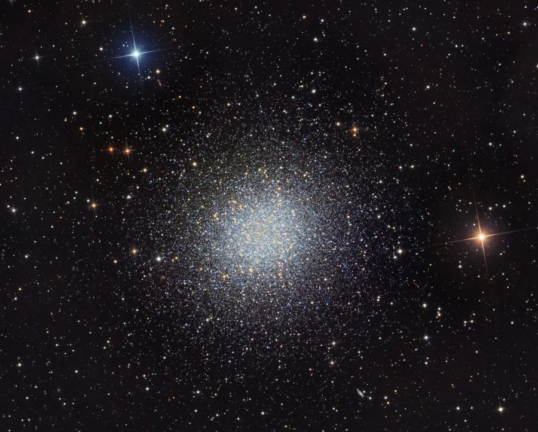- 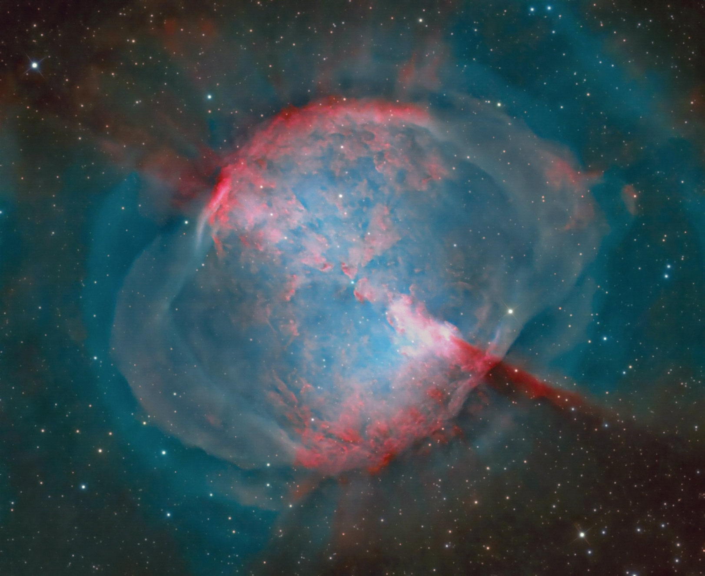
- 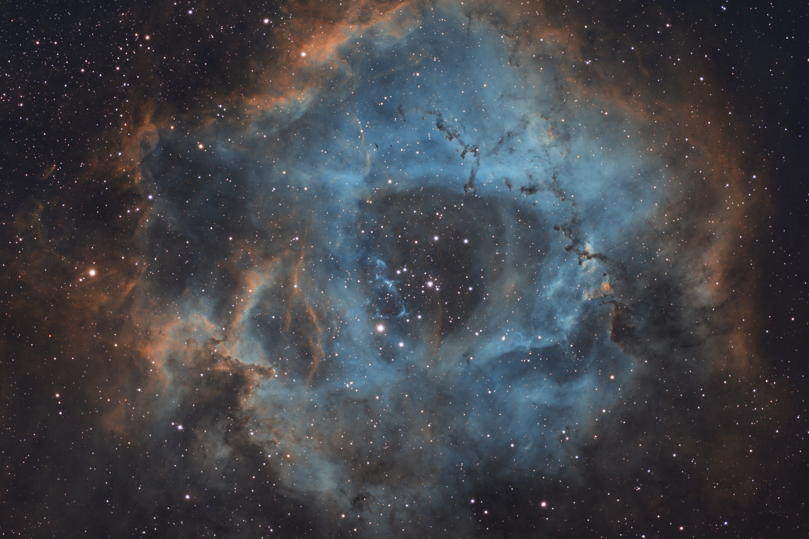
- 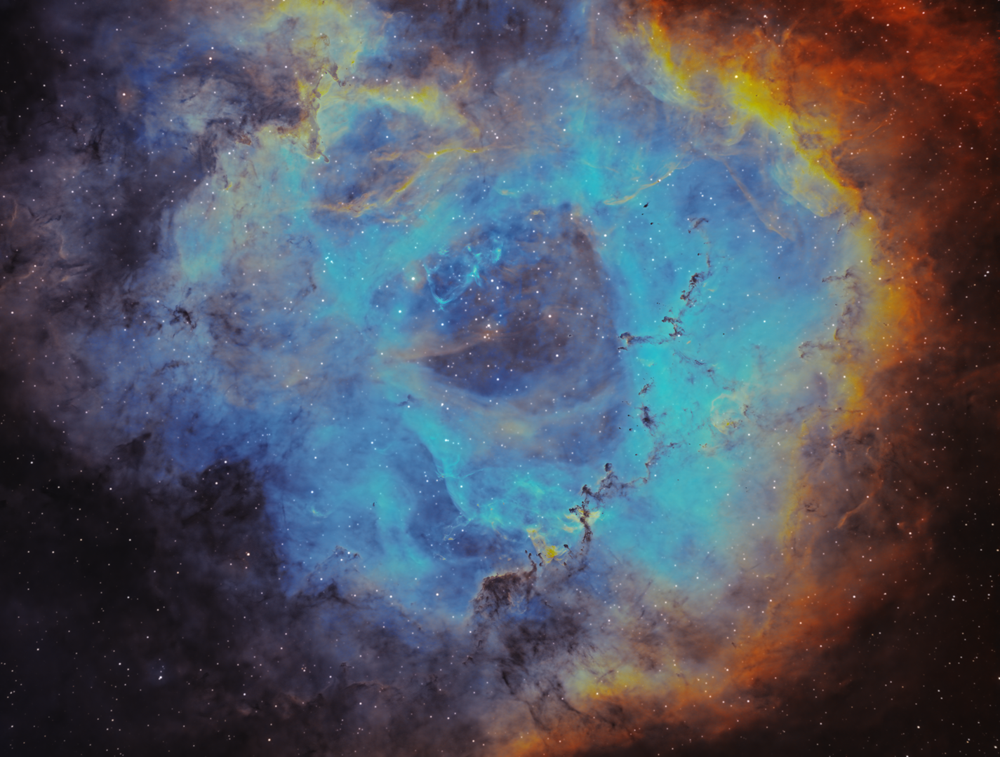
- 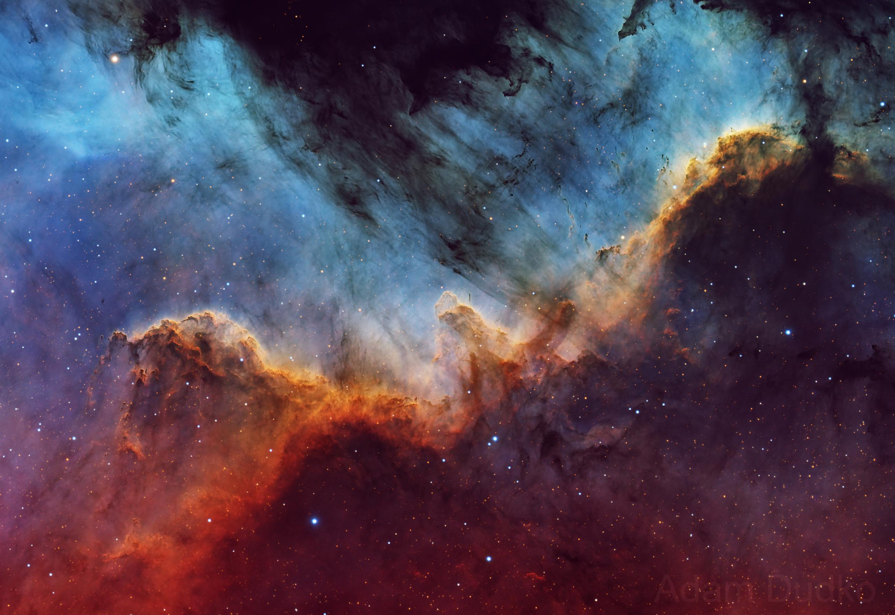

- 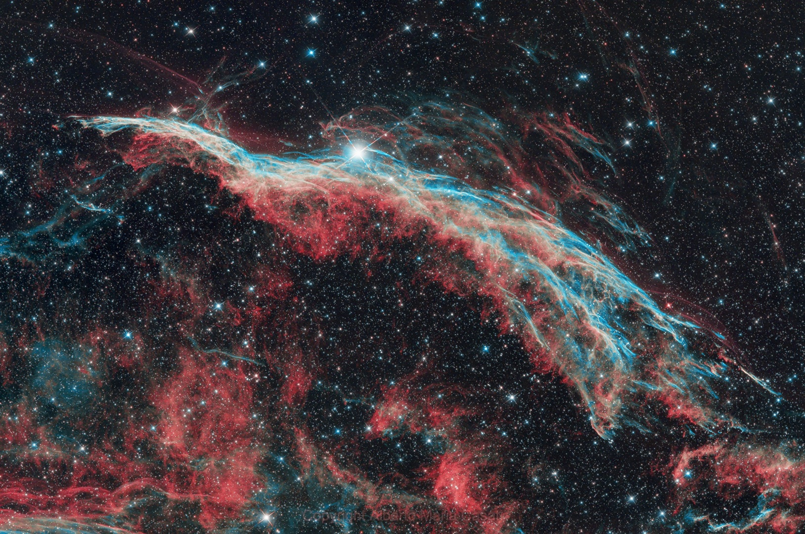
- 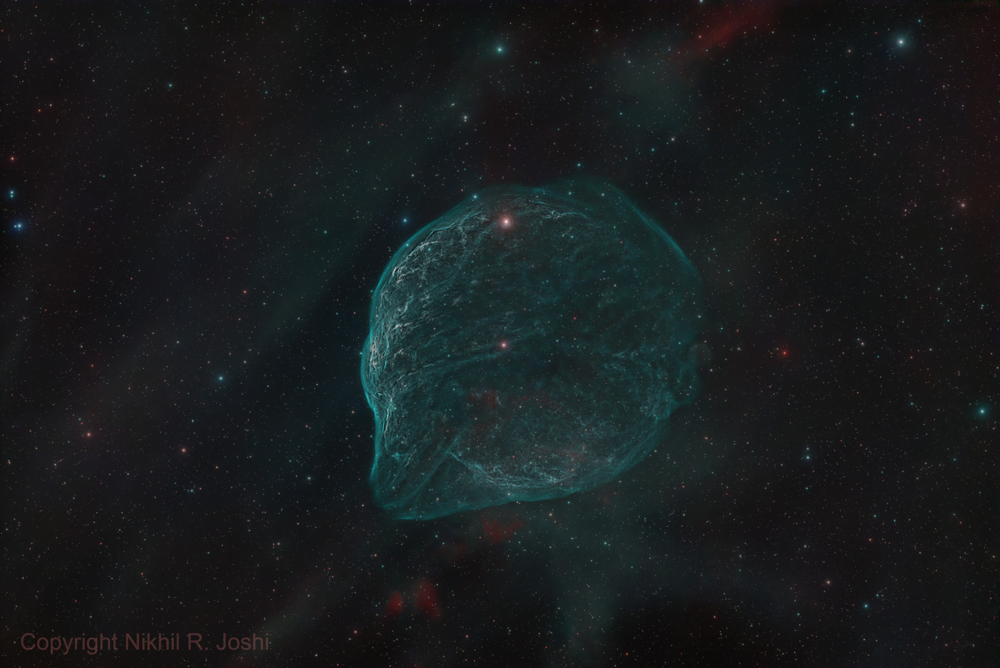

- 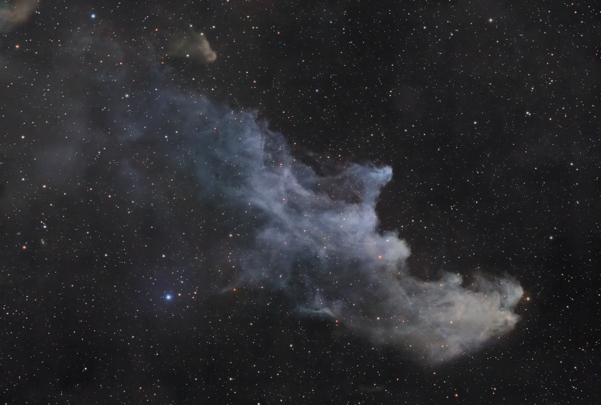
- 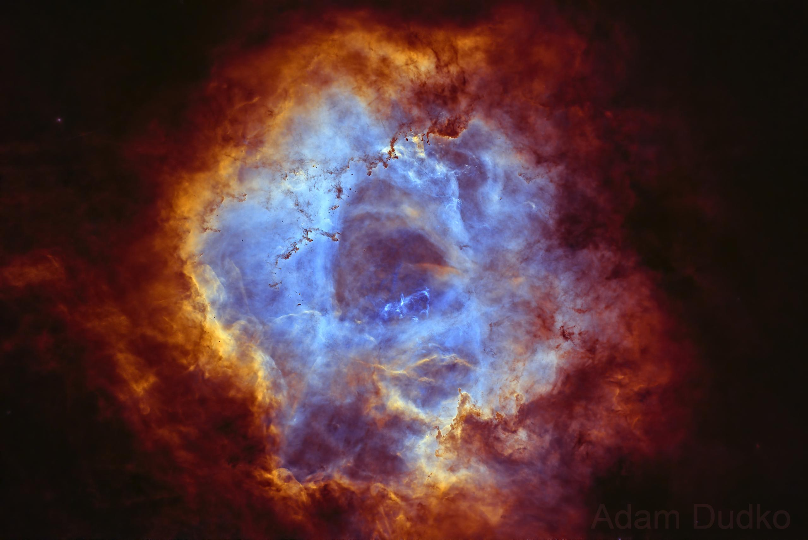
- 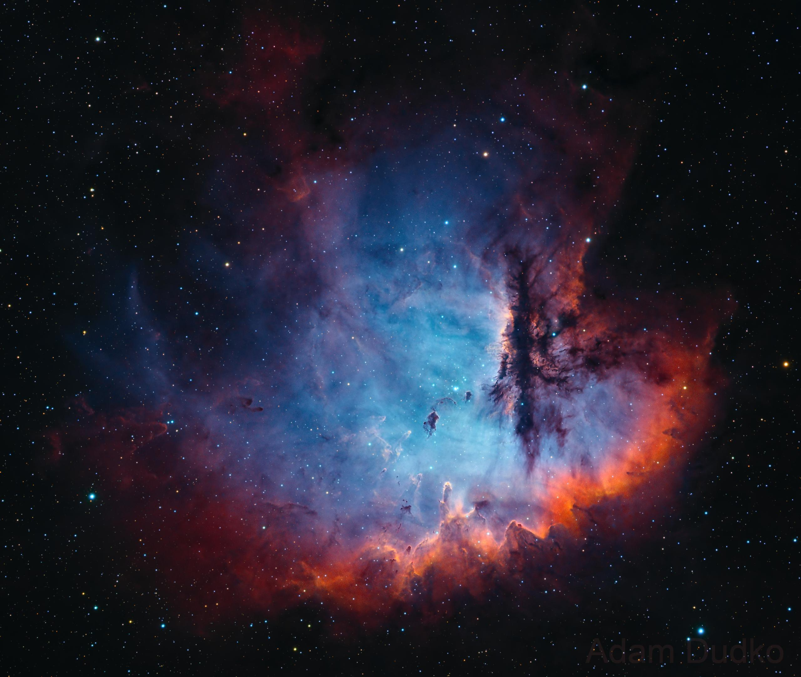
- 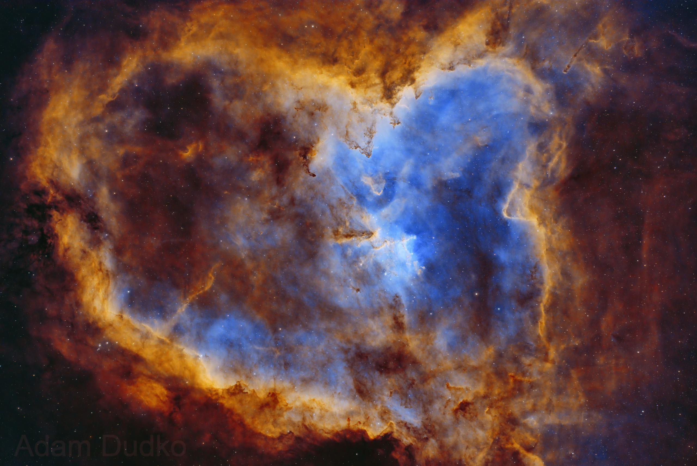